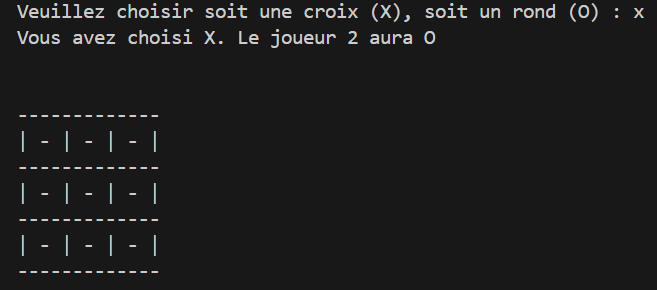
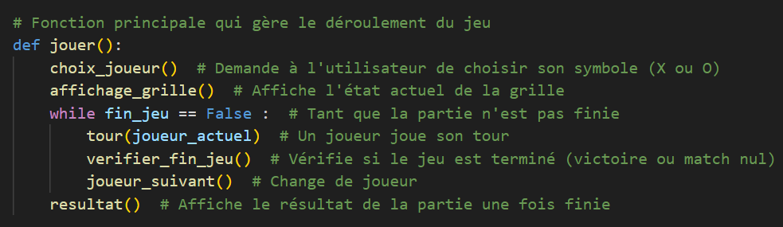
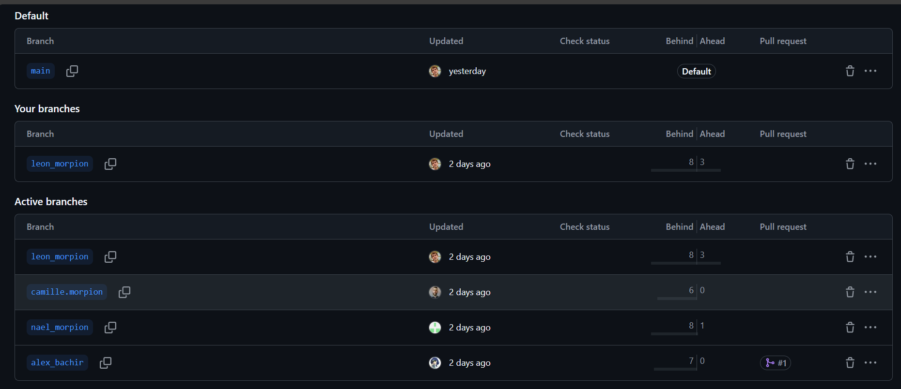

Conception
La conception du jeu **Morpion** s’est appuyée sur :
- Une interface permettant aux joueurs de se concentrer pleinement sur la partie.
- Une logique simple basée sur les règles classiques du jeu de Morpion, où deux joueurs s’affrontent pour aligner trois symboles.
- Un système de gestion des tours et des conditions de victoire (lignes, colonnes, diagonales) ainsi qu’une vérification automatique pour déclarer un gagnant ou un match nul.

Technologies Utilisées
Python : utilisé pour la logique du jeu, la gestion des tours des joueurs, et la vérification des conditions de victoire.
GitHub : pour la gestion du code source et la collaboration sur le projet.
Trello : utilisé pour organiser et suivre l'avancement des différentes étapes du projet.

Contexte de Réalisation
Ce projet a été réalisé dans le cadre de ma formation en Développement Web. Il avait pour objectif :
- D’acquérir des compétences en développement de jeux interactifs avec une logique simple.
- De mettre en œuvre une gestion de projet agile, en utilisant Trello pour organiser les différentes étapes de développement.
- De pratiquer le développement collaboratif avec GitHub pour gérer le code source et la versioning du projet.
.png)
Ce que j'ai réalisé
Voici les tâches spécifiques que j’ai menées à bien :
- Développement de la logique du jeu : Création des règles du jeu, gestion des tours, et détection des conditions de victoire ou de match nul.
- Gestion de projet avec Trello : Organisation des tâches et des délais de manière agile pour suivre l’avancement du développement.
- Suivi du code avec GitHub : Versioning du code source, suivi des problèmes et des améliorations via les issues et les pull requests.
